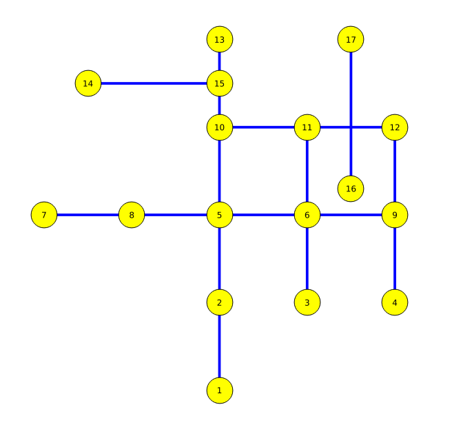

Shortest Path Search
in your Database
... and more with pgRouting
Created by Daniel Kastl / @dkastl

Daniel Kastl
- Geographer, Mapper, Software Developer
- Maintainer of the pgRouting Project
- Founder of Georepublic
- Living in Germany and Japan
- Enjoy Open Source FOSS4G


Commercial Services
- FOSS4G Development
- Mobile Apps & LBS
- Open Data & Open Government
- Training & Consulting
- Hackathons (Code4Japan)
- OpenStreetMap
Celia Virginia Vergara Castillo
- Economist, Computer Scientist
- pgRouting software developer
- Living in Mexico
- Known as Vicky
- Enjoy Open Source FOSS4G
pgRouting Project
An Open Source project, ...


Ein Open Source Projekt, ...


A Library providing ...

Routing in the Database
A Library providing ...
- Shortest Path Algorithm
- Dijkstra, A-Star, One-to-many, All-pair SP.
- Alternative Routes & Turn Restrictions
- Traveling Salesperson Algorithm
- Drivetime Analysis
- Vehicle Route Problem Solver
Create a Database
pgRouting extends PostgreSQL/PostGIS
CREATE DATABASE routing;
\c routing
CREATE EXTENSION postgis;
CREATE EXTENSION pgrouting;
SQL Query
SELECT * FROM pgr_dijkstra('
SELECT gid as id,
source,
target,
length as cost
FROM ways',
30, 60, false);
Query Result
seq | node | edge | cost | agg_cost
----+------+------+------------+------------
0 | 30 | 53 | 0.05912676 | 0
1 | 44 | 52 | 0.06654083 | 0.05912676
2 | 14 | 15 | 0.08095568 | 0.12566759
3 | 13 | 14 | 0.07269427 | 0.20662328
4 | 12 | 13 | 0.08123934 | 0.27931755
5 | 11 | 12 | 0.00746935 | 0.36055690
6 | 10 | 6869 | 0.01642741 | 0.36802626
7 | 59 | 72 | 0.01093851 | 0.38445368
8 | 60 | -1 | 0 | 0.39539219
(9 rows)


Variable Costs


Towards v3.0
Goals
- Boost
- Undirected Graph
- Directed Graph
- Internal library
- Support for big integer
- Avoid user contradictory input
An Idea
Keep the graph in memory
to speedup subsequent requests


Cool code
void old_complicated_stuff() {
A // 100 lines of code
B // 50 lines of code
bug
C // 50 more lines of code
D // 50 more lines of code
} copy / paste
void my_complicated_stuff() {
E // 100 lines of code
// TODO part of complicated stuff
F // 50 more lines of code
} User contradictory input
select * from pgr_foo(
'select id, source, target, cost, reverse_cost from edges', 3, 5,
false,
false);
and
select * from pgr_foo(
'select id, source, target, cost from edges', 3, 5,
false,
true);

Plan
- Precise definition of Graphs
- Gradual creation of internal library
- Incremental releases


Weighted Directed Graph
-
Let $V$ be a set of vertices
$V = source \cup target \cup \{start_v\} \cup \{end_v\}$ -
Let $E$ be a set of edges
- when $reverse\_cost = \varnothing$:
$E = \{ (source_i, target_i, cost_i) | cost_i \geq 0 \}$ - when $reverse\_cost \neq \varnothing$:
$E = \{ (source_i, target_i, cost_i) | cost_i \geq0 \}$
$\cup \quad \{ (target_i, source_i, reverse\_cost_i) | reverse\_cost_i \geq 0)\}$
- when $reverse\_cost = \varnothing$:
- $G_d(V,E)$ is a weighted directed graph
Weighted Directed Graph
with reverse cost

Weighted Directed Graph
no reverse cost

Weighted Undirected Graph
-
Let $V$ be a set of vertices
$V = source \cup target \cup \{start_v\} \cup \{end_v\}$ -
Let $E$ be a set of edges
- when $reverse\_cost = \varnothing$:
$E = \{ (source_i, target_i, cost_i) | cost_i \geq 0 \}$
$\cup \quad \{ (target_i, source_i, cost_i) | cost_i \geq 0 \}$ - when $reverse\_cost \neq \varnothing$:
$E = \{ (source_i, target_i, cost_i) | cost_i \geq0 \}$
$\cup \quad \{ (target_i, source_i, cost_i) | cost_i \geq 0 \}$
$\cup \quad \{ (target_i, source_i, reverse\_cost_i) | reverse\_cost_i \geq 0)\}$
$\cup \quad \{ (source_i, target_i, reverse\_cost_i) | reverse\_cost_i \geq 0)\}$
- when $reverse\_cost = \varnothing$:
- $G_u(V,E)$ is a weighted undirected graph
Weighted Undirected Graph
with reverse cost

Weighted Undirected Graph
no reverse cost

pgr_Dijkstra
-
Given a graph:
\[ G(V,E) = \begin{cases} G_d(V,E) & \quad \text{when } directed = true\\ G_u(V,E) & \quad \text{when } directed = false\\ \end{cases} \] - and the starting and ending vertices:
$start_v$ and $end_v$ - The algorithm returns a path $\pi$, if it exists, which is the shortest path using Dijsktra algorithm between $start_v$ and $end_v$ in terms of a sequence of vertices and of edges:
\[ \pi = \{(seq_i, node_i, edge_i, cost_i, agg\_cost_i) | \\ seq_i = i \\ node_1 = start_v \\ \land node_{|\pi|} = end_v \\ \land edge_i = \begin{cases} id(node_i, node_{i+i}, cost_{(node_i, node_{i+i})} ) & \quad \text{when } i \neq |\pi| \\ -1 & \quad \text{when } i = |\pi| \\ \end{cases} \\ \land agg\_cost_i = \sum_{j=1}^{i-1} cost_j \} \] - If there is no path, $\pi = \varnothing$


Interested in pgRouting?
- Email: daniel@georepublic.de
- Twitter: @dkastl
- Website: http://georepublic.info
- pgRouting: http://pgrouting.org